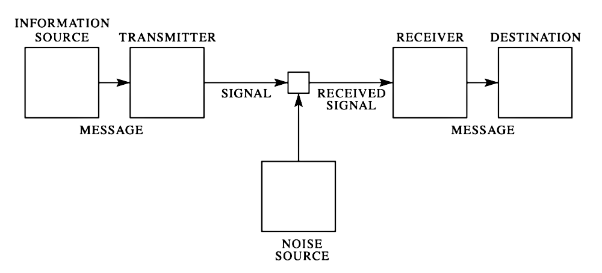
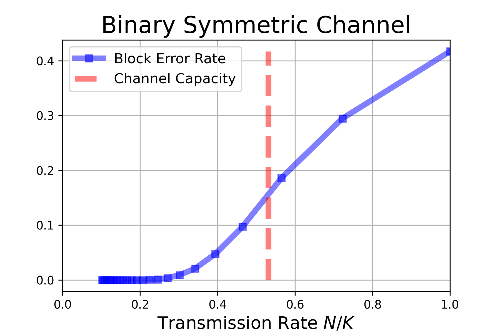

Transmission through a noisy channel
Consider a scenario involving a “noisy channel,” where a message \((x_1,x_2, \ldots)\) expressed in an alphabet \(\mathcal{X}\) is transmitted before being received as a potentially different and corrupted message \((y_1, y_2,\ldots)\) expressed using a potentially different alphabet \(\mathcal{Y}\). One can assume that letter \(x \in \mathcal{X}\) is transformed into \(y \in \mathcal{Y}\) with probability \(p(x \to y)\) so that the matrix \(M_{x,y} = [p(x \to y)]_{(x,y) \in \mathcal{X}\times \mathcal{Y}}\) has rows summing-up to one, and that the “letters” of the message \((x_1 x_2 \ldots)\) are transmitted one by one and independently from each other (ie. there is no memory effect in the channel).
Now, imagine I have a text that needs to be transmitted through this channel. Assume that the text is represented using \(N\) bits. My goal is to encode it in a way that introduces redundancy, utilizing the alphabet \(\mathcal{X}\), so that it can be transmitted through the noisy channel. Eventually, I want it to be successfully decoded, allowing the original message to be recovered with minimal errors.

If transmitting each letter from the alphabet \(\mathcal{X}\) takes \(1\) unit of time, I need to estimate the overall time it will take to transmit the entire text of \(N\) bits. In cases where the channel does not completely destroy the information, one can use about any non-idiotic encoding and transmit the same text multiple times to increase the chances of accurately recovering the original message. This can be achieved by employing techniques such as majority voting to decode the received messages, which are all distorted versions of the original text.
The transmission rate represents the inverse of the time required to transfer a single bit of information:
\[ \textrm{R = (Transmission Rate)} = \frac{1}{\textrm{(average time it takes to transfer one bit)}}. \]
In other words, it takes about \(N \times R\) unit of times to transfer a text of \(N\) bits. Moreover, the error rate refers to the percentage of errors in the decoded message, indicating the fraction of erroneous bits among the \(N\) decoded bits. Naturally, there exists a tradeoff, and it is evident that one can reach a vanishing error rate if one is willing to allow an arbitrarily slow transmission rate (eg. majority voting after transmitting a very large number of times the same text). For example, if \(\mathcal{X}= \mathcal{Y}= \{0,1\}\) and bits are flipped with probability \(p_{\text{flip}} \ll 1\), transmitting the text \((2K+1)\) times would lead to a transmission rate of \(R = 1/(2K+1)\) and an error rate approximately equal to \(p_{\text{flip}}^{K+1}\).
The groundbreaking discovery made by Shannon is that it is possible to achieve a vanishing error rate even when transmitting at a finite transmission rate. He also managed to identify this optimal transmission rate. Shannon’s paper (Shannon 1948) is beautifully written and surprisingly readable for a text written more than 50 years ago.
Vanishing error rate: Shannon Codebooks
Let’s imagine that we have a piece of information encoded in a variable, \(X\). We send \(X\) through a noisy channel, and at the other end we receive a somewhat distorted message, \(Y\). So, how much of our original information actually was transmitted? To reconstruct our original message, \(X\), using our received message, \(Y\), we require an average of \(H(X|Y)\) additional bits of information. On average, \(X\) contains \(H(X)\) bits of information. So, if we encode \(H(X)\) bits of useful information in \(X\), the variable \(Y\) that is correlated with \(X\) still holds \(I(X;Y) = H(X) - H(X \, | Y)\) bits of that original information. The quantity \(I(X;Y)\) is the mutual information between the random variables \(X\) and \(Y\). In a noisy channel that transmits one “letter” at a time, the conditional probabilities \(p(x \rightarrow y)\) are fixed. However, we can optimize the distribution of incoming messages. For instance, we can choose to transmit letters that are less likely to be corrupted. This discussion suggests that on average, transmitting \(N\) symbols through the channel can provide up to \(N \times C\) bits of information, where \(C = \max I(X;Y)\), the maximization being over the distribution of \(X\) while keeping the conditional probabilities \(p(x \rightarrow y)\) fixed. It may seem that this implies a noisy channel cannot transmit information at a rate higher than \(C\). This hypothesis was precisely proven by Claude Shannon, who further established that this transmission rate can indeed be reached.
To prove that this transmission rate is achievable, Shannon’s idea was to simultaneously encode blocks of letters. To put it simply, consider the \(2^N\) feasible blocks \(\{ t^{[1]}, \ldots, t^{[2^N]} \}\) of \(N\) binary letters. Each block \(t^{[i]} \in \{0,1\}^N\) has \(N\) binary letters, \(t^{[i]} = (t_1^{[i]}, \ldots, t_N^{[i]})\). Associate to each of block \(t^{[i]} \in \{0,1\}^N\) a codeword \(x^{[i]} \in \mathcal{X}^K\) of size \(K\) in the alphabet \(\mathcal{X}\). The set of these \(2^N\) codewords is usually called the codebook,
\[ \mathcal{C}= \left\{ x^{[1]}, x^{[2]}, \ldots, x^{[2^N]} \right\} \; \subset \mathcal{X}^{K} \tag{1}\]
To transmit a block of \(N\) letters from the original text, this block is first transformed into its associated codeword \(x=(x_1, \ldots, x_K) \in \mathcal{X}^K\). This codeword is then sent through the noisy channel, resulting in a received message \((y_1, \ldots, y_K) \in \mathcal{Y}^K\). The objective is to design a codebook with enough redundancy so that one can reconstruct the original codeword from the received message \((y_1, \ldots, y_K)\): the higher the ratio \(K/N\), the larger the redundancy and the easier it should be to achieve this goal. The transmission rate is defined as \(R = \frac{N}{K}\) since transmitting a binary text of length \(N\) with vanishing errors takes \(K\) units of time.
For generating the codebook in Equation 1, Shannon adopted a simple approach consisting in generating each \(x^{[i]}_k\) for \(1 \leq i \leq 2^N\) and \(1 \leq k \leq K\) independently at random from some (encoding) distribution \(p_{\text{code}}(dx)\). The choice of this encoding distribution can be optimized at a later stage.
Consider the codeword \(x^{[0]} = (x^{[0]}_1, \ldots, x^{[0]}_K)\). After being transmitted through the noisy channel, this gives rise to a message \(y_{\star}\). The codeword \(x^{[0]}\) can be easily recovered if \((x^{[0]}, y_\star)\) is typical while all the other pairs \((x^{[i]}, y_\star)\) for \(2 \leq i \leq 2^N\) are atypical. Since there are about \(2^{K \, H(X | Y)}\) elements \(x \in \mathcal{X}^K\) such that \((x, y_\star)\) is typical, and each codeword was chosen approximately uniformly at random within its typical set of size \(2^{K \, H(X)}\), the probability for a random codeword to be atypical is about
\[1-2^{-K \, [H(X) - H(X|Y)]} = 1 - 2^{-K \, I(X;Y)}\]
Consequently, the probability that all the other pairs \((x^{[i]}, y_\star)\) for \(2 \leq i \leq 2^N\) are atypical is
\[ p_{\text{success}} = (1 - 2^{-K \, I(X;Y)})^{2^N-1} \approx (1 - 2^{-K \, I(X;Y)})^{2^{KR}}. \]
The probability \(p_{\text{success}} \to 1\) as soon as \(R < I(X;Y)\) as \(N \to \infty\). Furthermore, remembering that one were free to optimize the encoding distribution \(p_{\text{code}}(dx)\), a vanishing error rate is possible as soon as the transmission \(R\) rate is lower than
\[ \text{(Channel Capacity)} = C \equiv \max_{p_{\text{code}}} \; I(X;Y). \]
To sum-up, consider \(p_{\mathcal{C}, \text{success}}\) the success rate of the codebook \(\mathcal{C}\), ie. the probability that a random codeword of \(\mathcal{C}\) is successfully decoded when passing through the noisy channel. The reasoning above shows that the averaged success rate \(p_{\text{success}} = \left< p_{\mathcal{C}, \text{success}} \right>\), i.e. averaging \(p_{\mathcal{C}, \text{success}}\) over all possible codebooks \(\mathcal{C}\), converges to one as long as the transmission rate is below the channel capacity \(C\). This means that one can find at least one codebook that works well! This reasoning is an example of the “probabilistic method”… Indeed, one also expect most random codebook to work well!
No vanishing error below the channel capacity
To demonstrate that transmission at vanishing error-rate is impossible when the transmission rate exceeds the channel capacity, \(C\), we can utilize Fano’s inequality.
Imagine selecting a message \(M\) uniformly at random within \(\{0,1\}^N\) and encode this message into the sequence \(X=(X_1, ..., X_K) \in \mathcal{X}^K\). We send \(X\) through a channel with capacity \(C\) and receive a corresponding, though somewhat distorted, signal \(Y=(Y_1, ..., Y_K)\). Finally, we decode this received message into \(\widehat{M}\), an estimate of our original message:
\[ M \rightarrow X \rightarrow Y \rightarrow \widehat{M}. \]
Fano’s inequality points out that the error probability, \(p_E = \mathop{\mathrm{\mathbb{P}}}(\widehat{M} \neq M)\) is such that
\[ \begin{align} H(M | \widehat{M}) &\leq 1 + p_E \, \log_2(\# \textrm{possible values of } M)\\ &= 1 + p_E \, N \end{align} \]
Applying the data-processing inequality to \(M \rightarrow X \rightarrow Y \rightarrow \widehat{M}\) proves:
\[ \begin{align} N &= H(M) = H(M | \widehat{M}) + I(M; \widehat{M}) \\ & \leq H(M | \widehat{M}) + I(X; Y)\\ & \leq 1 + N \, p_E + I(X; Y). \end{align} \]
To wrap up, recall that each received letter \(Y_i\) in the message (Y_1, , Y_K)$ depends solely on the corresponding letter \(X_i\) in the message sent through the channel. This implies that \(I(X; Y) \leq \sum_{i=1}^K I(X_i; Y_i) \leq K \, C\).This yields:
\[ N \leq 1 + N \, p_E + K \, C. \]
This reveals that for the probability of error to go to zero, i.e. \(p_E \rightarrow 0\) as \(N \rightarrow \infty\), the transmission rate \(N/K\) must be lower than \(C\).
Experiment
Consider the Binary Symmetric Channel (BSC) that randomly flips \(0 \mapsto 1\) and \(1 \mapsto 0\) with equal probability \(0<q<1\). The capacity of this channel is easily computed and equals \(C = 1 - h_2(q)\) where \(h_2(q) = -[q \, \log_2(q) + (1-q) \, \log_2(1-q)]\) is the binary entropy function: the optimal encoding distribution is
\[p_{\text{code}}(0) = p_{\text{code}}(2) = 1/2.\]
For a flipping rate of \(q=0.1\) the channel capacity equals \(C=0.53\). To estimate the performance of the random Shannon codebook strategy, I chose \(N=13\) and several values of \(K \geq N\). This means generating a random codebook \(\mathcal{C}= \{x^{[1]}, \ldots, x^{[2^N]}\}\) of size \(2^{13} = 8192\) consisting of random binary vectors of size \(K\). For a randomly chosen codeword \(x^{[i]}\), a received message \(y_\star\) is generated by flipping each of the \(K\) coordinates of \(x^{[i]}\) independently with probability \(q\). In the BSC setting, it is easily seen that the codeword of \(\mathcal{C}\) that was the most likely to have originated \(y_{\star}\) is
\[ x_\star \; = \; \mathop{\mathrm{argmin}}_{x \in \mathcal{C}} \; \|x - y_\star\|_{L^2}. \]
The nearest neighbor \(x_\star\) can be relatively efficiently computed with a nearest-neighbor routine (eg. FAISS). The figure below reports the probability of error (i.e. “Block Error Rate”),
\[ \text{(Block Error Rate)} \; = \; \mathop{\mathrm{\mathbb{P}}}(x_\star \neq x^{[i]}) \]
when the codeword \(x^{[i]}\) is chosen uniformly at random within the codebook.

It can be seen that, although the error rate does go to zero for low transmission rate, the choice of \(K = N / C\) where \(C\) is the channel capacity still yields a relatively large block error rate. This indicates that the block size \(N=13\) is still far too low for the “law of large number” arguments presented in the previous section to kick-in. I did try for \(N=20\) and a codebook of \(2^{20} \approx 10^6\) and the performace was still not impressive. This shows that even though the Shannon codebook approaches is an elegant construction, it is far from being practically useful. It requires a very large codebook of size \(2^N\) and decoding requires doing a nearest-neighbors search that can become slow as \(N\) increases.